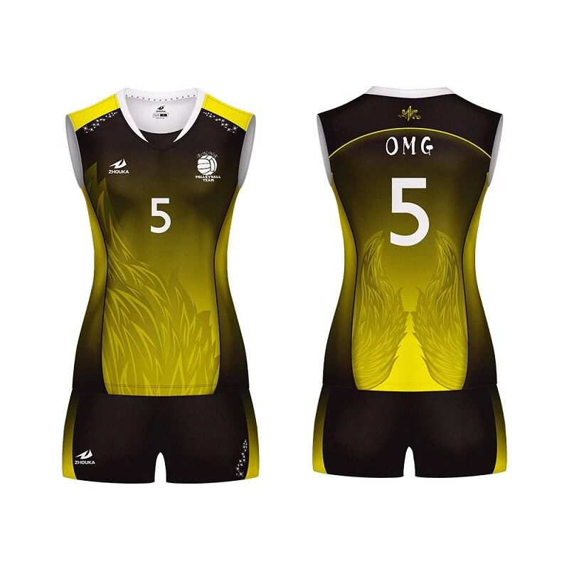

Voleybol giysileri
Rekabetin ve hızın yoğun olarak hissedildiği voleybol sporunda ana hedef, topu sahanın dışına çıkarmamak ve yere düşürmemek olduğu için, son derece esnek ve kondisyonlu olmak gerekiyor. Servis, pas, smaç, blok, müdafaa, servis karşılama gibi temel hareketlerin seri olarak tekrarlandığı bu sporda atlamalar, zıplamalar, yere düşmeler, sert vuruşlar eksik olmuyor. Böylesi hareketli bir maç performansını rahat, güvenli ve sorunsuz atlatabilmek için ise tam da bu spor için özel olarak tasarlanmış kıyafetler tercih etmek gerekiyor. Sporcular için tasarlanan voleybol giyimi sağlam, esnek ve rahat kumaşlardan üretiliyor. Temelde şort, forma, çorap ve ayakkabıdan oluşan voleybol kıyafetlerine ek olarak kullanılan dizlik ve dirseklikler, olası aksiliklere karşı sporcuyu korumak için tasarlanıyor.
